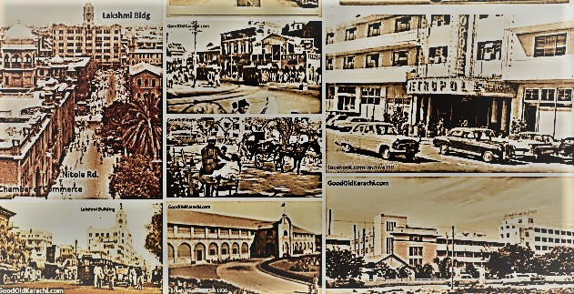

Old Karachi

A Small Fishing Settlement
Karachi began as a small fishing village. It is traditionally said to have been settled around 1729 and was known as Kolachi. The village sat near the sea, and fishing and trade were the main ways of life.
Under British Rule
The British took control of Karachi in 1839 and the city started to grow quickly. A railway line connected it to the rest of the region in 1861, and the opening of the Suez Canal in 1869 made its port much more important for trade.
The City Changes
New roads, markets and public buildings were built in the late 1800s. Many of them are still standing today. After 1947, Karachi became the first capital of Pakistan and its population grew very fast.
Every old street in Karachi has a story, even if nobody writes it down.